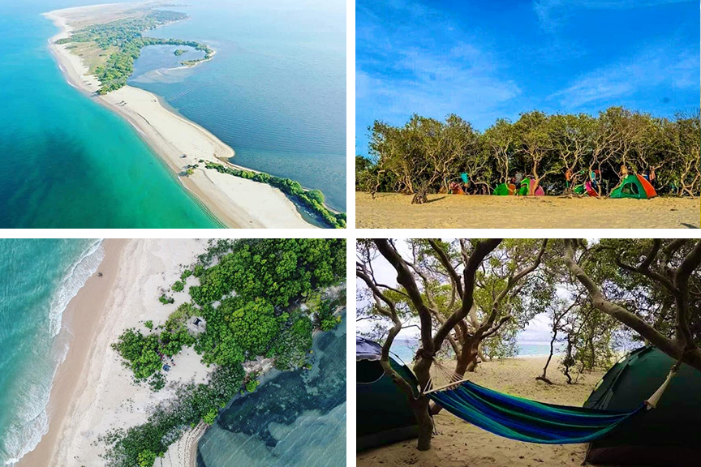

Night Camping at Baththalangunduwa Island is A Unique Experience in Kalpitiya
Kalpitiya, a coastal paradise nestled in the northwestern province of Sri Lanka, is renowned for its stunning beaches, diverse marine life, and a plethora of outdoor activities. Among its many attractions, Baththalangunduwa Island stands out as a gem for those seeking a unique and immersive camping experience under the starlit sky.
Location and Accessibility:
Baththalangunduwa Island, often simply called "Baththalangunduwa," is situated off the coast of Kalpitiya and is accessible by boat from the mainland. The island is relatively small, covering about 150 acres, yet it offers a rich tapestry of natural beauty and cultural experiences.
The Charm of Night Camping:
One of the most enchanting ways to experience Baththalangunduwa is through night camping. As the sun begins to set, casting hues of orange and pink across the horizon, the island transforms into a tranquil haven perfect for a night under the stars.
Setting Up Camp:
Upon arriving at Baththalangunduwa, visitors can set up their tents along the beach or in designated camping areas. The sound of gentle waves lapping against the shore creates a soothing ambiance, inviting campers to unwind and embrace the serenity of the island.
Savoring Fresh Seafood:
One of the highlights of camping at Baththalangunduwa is indulging in freshly caught seafood. Local fishermen often visit the island, offering a variety of seafood delicacies such as grilled fish, prawns, and crab. Gathering around a bonfire to enjoy these delectable treats under the open sky adds to the memorable experience.
Stargazing and Nighttime Adventures:
As night falls, Baththalangunduwa reveals its celestial wonders. With minimal light pollution, the night sky becomes a canvas adorned with countless stars, offering a captivating stargazing experience. Campers can also opt for nighttime boat rides to witness the bioluminescent plankton illuminating the water, creating a magical spectacle.
Exploring the Island:-

During the daytime, adventurers can explore Baththalangunduwa's charms further. The island is dotted with mangrove forests, sandy beaches, and quaint fishing villages, providing ample opportunities for nature walks, birdwatching, and cultural interactions with the local community.
Practical Tips for Night Camping at Baththalangunduwa:-
Pack Essentials: Bring camping gear, mosquito repellent, sunscreen, and appropriate clothing for both day and night activities.
Respect Nature: Maintain cleanliness, avoid littering, and follow guidelines for responsible camping.
Safety Measures: Be mindful of tides, follow instructions from local guides, and ensure boats are equipped with necessary safety gear.
Book in Advance: Due to its popularity, especially during peak seasons, it's advisable to book camping arrangements and boat rides in advance.
Conclusion
Night camping at Baththalangunduwa Island offers a blend of natural beauty, cultural immersion, and adventurous escapades, making it a must-visit destination for travelers seeking an unforgettable experience in Kalpitiya's coastal wonders. Whether it's watching the sunset, savoring seafood by the bonfire, or marveling at the starry skies, Baththalangunduwa promises a memorable retreat into the heart of nature.
NOTE:-
If you like to Night Camping at Baththalangunduwa Island,
you can know about the prices and packages
from the hotels mentioned on our home page
and can book.